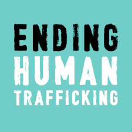
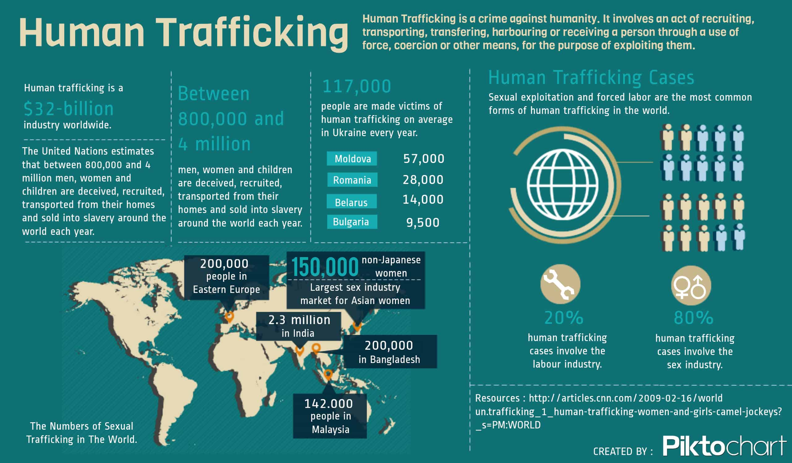
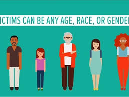

- By definition human trafficking is the action or practice of illegally transporting people from one country or area to another.
- Huamn trafficking victims are most commonly young women but children and men are also trafficked.
What is Human Trafficking?
Statistics
Human trafficking is slavery to human beings. This form of human selling has been around for generations. Victims of human trafficking are forced to do forced labor, sexual acts, or drug cartel. Human trafficking victims live right under our noses many times you don't even realize that someone is being abused. "The average age that someone is rucrited for human trafficking is 14 years old." Human trafficking is happening everywhere, no matter what country or state you are in.
  


What can we do to help end human trafficking??
We can help stop human trafficking by educating people about human trafficking and ways to protect themselves as well as their children. Also helping organizations such as Meet me at the Well will not only help support them but also help the victims. If you notice anything suspictious report or call the hotline number.
As a community it is so important to be aware of your surroundings but also the surroundings of others. Report even if you think what you are seeing is not a big deal you never know.